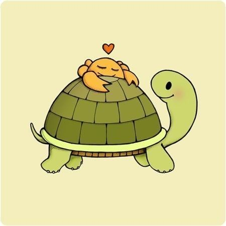

❀

Камушкина Наталия
Почта: nataliakamush@gmail.com
Мой университет: РГГУ
Сайт моего факультета: http://isdwiki.rsuh.ru
Тема курсовой: "Разработка программы для тестирования студентов по дисциплине «Логическое
программирование» на языке Python."
Научный руководитель: Аншаков Олег Михайлович.
Моя почта: nataliakamush@gmail.com
Что я люблю:
- Программирование
- Рисование
- Кулинария
- Путешествия
- Рыбалка
- Иностранные языки
- Спорт
- Животные
- Музыка
Если ты тоже любишь что-то из этого, давай дружить!
Моя страница на GitHub
Музыка для новогоднего настроения :)
Конец
страницы!
❀
Нажмите сюда,чтобы вернуться к началу страницы